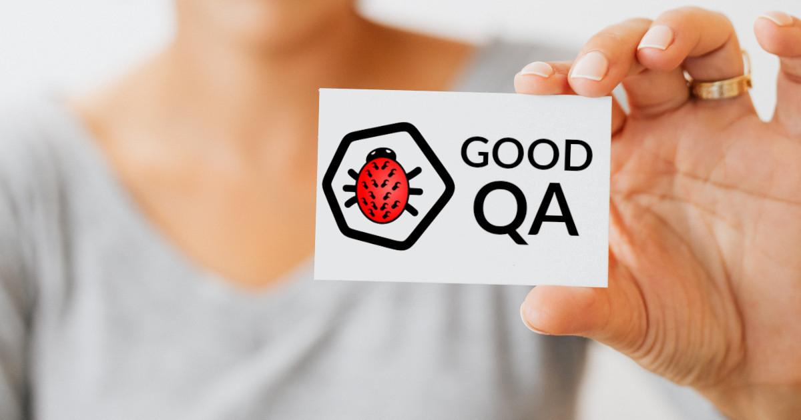

Dobry tester? A kto to taki?
 Wykorzystano zdjęcie autorstwa Karolina Grabowska z Pexels
Czy zastanawiałeś się kiedyś, co to znaczy być tzw. dobrym testerem? Zapewne każdy ma jakieś wyobrażenie na ten temat i podziwia kogoś, kogo uznaje za taką osobę. Jeśli jesteś ciekaw jakie ja mam na to spojrzenie, to zapraszam do lektury.
Według jakich kryteriów opisać dobrego testera?¶
Jeśli zaczniemy szukać opisów dobrego testera w przepastnych zasobach internetu, to trafimy głównie na całą masę artykułów wymieniający x cech dobrego testera. Poniżej kilka pierwszych linków do materiałów po polsku i angielsku:
- https://www.guru99.com/software-testing-career-complete-guide.html
- https://www.ministryoftesting.com/dojo/lessons/what-makes-a-good-software-tester
- https://www.softwaretestinghelp.com/10-qualities-that-can-make-you-a-good-tester/
- https://testerzy.pl/baza-wiedzy/7-cech-testera-ile-z-nich-posiadasz
- https://www.wyszkolewas.com.pl/dobre-cechy-testera/
- https://jakzostactesterem.pl/cechy-charakteru-przydatne-pracy-testera-oprogramowania/
Bardzo wiele z tych zestawień opiera się o bardzo zbliżone założenia, czyli:
- umiejętność pracy w zespole oraz komunikatywność i empatia, czyli w skrócie umiejętność pracy z ludźmi, żeby ich do siebie nie zrazić,
- skrupulatność, cierpliwość i dokładność, a więc umiejętność doszukania się dziury w całym oraz odpowiedniego jej opisania, często po raz pięćdziesiąty piąty,
- wiedzę domenową oraz umiejętność uczenia się, bo jeśli się nie znasz np. na pracy księgowej, a dostaniesz do testów program do fakturowania, to jakoś musisz go przetestować, a więc staniesz się “prawie” księgowym,
- znajomość języka obcego, no bo bez tego i tak nie znalazłbyś pracy jako QA, a większość oprogramowania tworzonego w naszym kraju jednak jest raczej nastawiona na globalny rynek,
- znajomość SQLa, bo przecież każdy projekt, używa jakiejś bazy danych,
- odporność na stres i umiejętność dostosowania się do szybko zmieniających się założeń, terminów lub priorytetów.
Powyższy podział pod wieloma względami jest poprawny, ale nakreśla obraz osoby, która musi posiadać wyżej wymienione cechy, aby faktycznie stać się dobrym testerem. A co jeśli nie mamy tych cech? Czy to już koniec naszych marzeń o zostaniu dobrym testerem i/lub lepszych zarobkach? A może nie trzeba się wieloma z tych rzeczy aż tak bardzo przejmować? Zanim przejdziemy do sedna, zastanów się razem ze mną, czym cechuje się pojedynczy test. Ale zaraz? Co to ma do rzeczy? Podążaj przez chwilę za mną, a wszystko wyjaśnię.
Cechy pojedynczego testu¶
Pisząc scenariusze testów oraz później, czy to wykonując je manualnie, czy też przekształcając je w testy automatyczne, robimy to w bardzo powtarzalny sposób. Opisujemy lub określamy, co nam będzie potrzebne do testu, np. jakiś użytkownik, co będzie on robił i co powinno się wydarzyć. Na zakończenie naszego testu, sporządzimy jakąś formę protokołu, z przeprowadzonego testu i jeśli znajdziemy błędy, to je odpowiednio raportujemy (choć to już bardziej proces testowania niż sam test).
Dlaczego o tym wspominam? Ponieważ taki opis nie mówi nam nic na temat technicznych aspektów. Zauważ, że opisany powyżej użytkownik mógłby być równie dobrze innym systemem (dlatego często używa się pojęcia aktor). Nie ma tu mowy ani o bazie danych, ani o niczym innym. Po prostu mamy opis stanu początkowego (co było przed), opis akcji (tego, co zrobił aktor) i oraz opis stanu końcowego (co się powinno wydarzyć). To jest opis tzw. automatu skończonego. Zauważ również, że nie ma znaczenia, czy czynności zostały wykonane manualnie, czy też automatycznie. Wiem, że możesz powiedzieć, że akcje manualne nie pasują do automatu skończonego, który opisuje akcje jakiegoś urządzenia, ale jeśli tester manualny wykonuje pewien z góry zdefiniowany algorytm, jakim jest scenariusz testy, to taki tester (w dużym uproszczeniu) od urządzenia różni się tylko tym, że oddycha.
Ale po co to wszystko?¶
Powód jest bardzo prosty: sprowadzenie testu do tego poziomu powoduje, że przestajesz patrzeć na testy w kontekście technologii, w jakiej została wykonana sama aplikacja, którą testujesz. Nie ma znaczenia czy jest to aplikacja webowa, aplikacja w telefonie, czy może komputer sterujący zapłonem w silniku. Testy dowolnej rzeczy zawsze możesz sprowadzić do tych 3 rzeczy: stanu początkowego, akcji i stanu końcowego. Idąc dalej tym tokiem rozumowania, przestawienie się z testowania aplikacji webowej na testowanie czegoś innego nie powinno stanowić aż tak dużego problemu. Znam całą masę osób, które przeszły taką ścieżkę i pomimo pewnych obaw, są zadowolone ze zmiany (jeśli chcesz zobaczyć, jak taka ścieżka może wyglądać, to zapraszam na stronę o mnie, gdzie opisuje, jak to wyglądało w moim przypadku). Oczywiście nie każdy się odważy na taki krok, ale chciałem pokazać Ci, że na pewne rzeczy można spojrzeć ciut inaczej. Wróćmy teraz do sedna tematu.
Dobry tester, czyli kto?¶
Powyższy akapit, powinien Cię ciut nakierować na odpowiedź na to pytanie. Jak jeszcze nie odpowiedziałeś na nie, to pozwól, że ja to zrobię. Dobry tester powinien być jak szwajcarski scyzoryk, czyli:
- mieć dużo narzędzi w swoim zanadrzu (lub po prostu umieć się nimi posłużyć i dobrać odpowiednie narzędzie do zadania),
- umieć się tymi narzędziami posługiwać (sam wpis w CV nie wystarczy),
- nie bać się pobrudzić (patrz początkowy opis o odporności na stres itp.),
- być zawsze pod ręką (no bo przecież praca w nadgodzinach to wszystko, o czym tester powinien marzyć).
No może bez tego ostatniego, ale dobry tester w projekcie czasem potrafi uratować sytuację, w krytycznych momentach. Cokolwiek bym nie napisał, całość sprowadza się do jednego prostego wyrazu: wszechstronność.
Dobry tester to wszechstronny tester¶
Zauważ, że to stwierdzenie wcale nie jest takie oderwane od rzeczywistości, ale tak naprawdę jest bardzo ogólnikowe. Wszechstronność to cecha bardzo pożądana na rynku pracy nie tylko u testera, ale i u developera, a w zasadzie to w dowolnym zawodzie. Patrząc tylko na nasze podwórko, czyli na rynek IT, mamy coraz większy wysyp zawodów typu człowiek orkiestra:
- Full Stack Developer, czyli developer umiejący wszystko: od back-endu (najczęściej REST API + jakaś baza danych), po front-end, a najlepiej, żeby i coś z działki administracji serwerami i sieciami wiedział,
- DevOps, czyli człowiek z pogranicza developmentu, eksploatacji (kiedyś znany pod pojęcie administratora) i QA,
- SocNoc, czyli człowiek od bezpieczeństwa oraz obsługi sieci (bardzo często security powiązane jest z monitoringiem w czasie rzeczywistym ruchu sieciowego).
Dla testerów powstało pojęcie TestOps (czasem można też spotkać pojęcie QAOps), które zaczyna być coraz częściej używane, a oznacza człowieka na pograniczu testów i eksploatacji. Taki tester nie tylko testuje, ale dba o środowiska do testów, potrafi zarządzać CI/CD oraz w razie konieczności proponować poprawki w zakresie bezpieczeństwa, monitoringu i wydajności. Jak więc widzisz, świat w branży IT coraz częściej odchodzi od specjalizacji, a podąża w kierunku wszechstronności. Nie twierdzę jednak, że nie ma miejsca na specjalizację w zawodzie testera. Twierdzę natomiast, a przerobiłem to na własnej skórze, że wszechstronność bardzo pomaga w wielu aspektach.
Co muszę umieć, aby być dobrym testerem?¶
To jest bardzo dobre, ale jednocześnie bardzo trudne pytanie. Dla każdego to może być coś innego i bardzo, ale to bardzo dużo zależy od naszych upodobań, już zdobytej wiedzy oraz aspiracji. Nie jestem w stanie podać idealnego zestawu umiejętności, bo taki nie istnieje. Są pewne podstawy i tutaj bardzo dobrze sprawdza się znajomość sylabusa z ISTQB. To, co później trzeba jeszcze przyswoić, będzie bardzo mocno zależało od:
- tego, w jakim miejscu kariery jesteśmy - junior, senior, a może menadżer,
- jaki mamy staż pracy - dopiero zaczynamy, czy może jesteśmy “starym wyjadaczem”,
- jakie studia/kursy skończyliśmy - czyli, w której dziedzinie mamy już jakąś szerszą wiedzę albo bardziej praktyczne umiejętności,
- gdzie do tej pory pracowaliśmy - zdobyte do tej pory doświadczenie zawodowe to w większości wypadków bardzo praktyczne umiejętności,
- gdzie chcemy być za jakiś czas - team leader, menadżer, a może właściciel swojej własnej firmy.
Jedno czego jestem pewien, to musisz nastawić się na ciągły rozwój i to czasem w kierunkach, które nie muszą być oczywiste, bo nigdy nie wiesz co i kiedy może Ci się przydać (jeśli przeczytałeś stronę o mnie, to wiesz, co mam na myśli).
Podsumowanie¶
Pomimo że powyższy artykuł nie dostarcza Ci bardzo konkretnej wiedzy, a zapewne spodziewałeś się znaleźć tu złoty przepis na sukces, to nie taki był cel tego artykułu. Chciałem Ci uświadomić, że nikt nie da Ci wskazówek, które się na pewno sprawdzą. To, co zadziała u jednej osoby, u innej może prowadzić do porażki. Jest bardzo wiele elementów, które każdy z nas odbiera inaczej. Nie ma jednej drogi, bo idąc tą samą ścieżką, jeden będzie biegł, a drugi będzie się potykał o każdy kamień i wystający korzeń. Jeśli ktoś mówi Ci, np. że ukończenie tego, a tego kursu da Ci gwarancje zatrudnienia, to najdelikatniej mówiąc, mija się z prawdą. Kurs może Ci to ułatwić i/lub nauczyć pewnych rzeczy. Reszta zależy od Ciebie, okoliczności oraz odrobiny szczęścia. Cały artykuł miał za zadanie otworzyć Ci oczy na ciut inne, szersze spojrzenie na same testy oraz skłonić do refleksji na temat Twojej kariery w testowaniu. Jeśli choć trochę mi się to udało i wyciągniesz jakieś konstruktywne wnioski, które pomogą Ci w rozwoju Twojej kariery, to będę się bardzo cieszył. Pamiętaj też, że im więcej umiesz, tym lepiej poradzisz sobie z wieloma aspektami w testowaniu i nie tylko. Spowoduje to również wzrost Twojej wartości na rynku pracy, a więc będziesz mógł negocjować wyższe zarobki.


Komentarze
Comments powered by Disqus